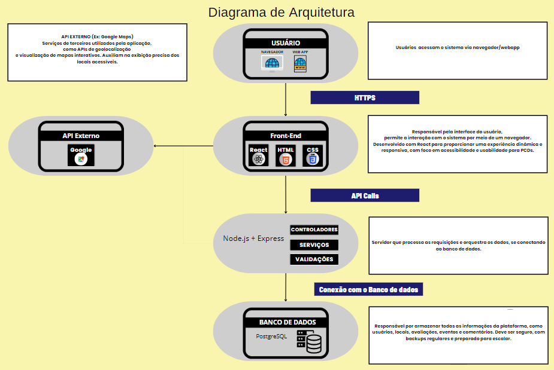

📊 Diagrama da Arquitetura do Sistema¶
Abaixo está representada a arquitetura geral do sistema Mapa da Acessibilidade, que descreve como os componentes se comunicam para fornecer funcionalidades acessíveis e eficientes.
🖼️ Visão Geral do Diagrama¶

graph TD
A[Frontend: React/Vite]
B[Backend: Node.js/Express]
C[Leaflet & Open Street Map]
D[Authentication Service]
E[Database: PostgreSQL]
F[External APIs]
G[PGAdmin]
A -->|API Calls| B
A --> C
A --> D
B --> E
B --> F
E --> G
🧩 Componentes da Arquitetura¶
👤 Usuário¶
- Os usuários acessam o sistema por meio de navegadores ou WebApps.
- O público-alvo inclui pessoas com deficiência (PCDs), sendo a acessibilidade um foco central da aplicação.
🎨 Front-End¶
- Tecnologias: React, HTML, CSS.
- É a interface gráfica que interage diretamente com o usuário.
- Desenvolvido com foco em acessibilidade, usabilidade e responsividade.
- Comunicação com o back-end ocorre via HTTPS.
🌐 API Externo¶
- Exemplo: Google Maps API.
- Utilizado para geolocalização e exibição de mapas interativos.
- Auxilia na exibição precisa de locais acessíveis no mapa.
🔧 Back-End (Node.js + Express)¶
- Atua como intermediário entre o front-end e o banco de dados.
- Processa requisições, realiza validações, chama serviços e aplica regras de negócio.
- Composto por três camadas principais:
- Controladores
- Serviços
- Validações
🛢️ Banco de Dados¶
- Tecnologia: PostgreSQL.
- Armazena todas as informações do sistema, incluindo:
- Usuários
- Locais
- Avaliações
- Eventos
- Comentários
- O banco é projetado para ser seguro, com backups regulares e preparado para escalabilidade.
🔁 Fluxo de Comunicação¶
- O usuário acessa a aplicação pelo navegador.
- O front-end envia requisições via HTTPS para a API.
- A API (Node.js/Express):
- Valida e processa os dados.
- Comunica-se com o banco de dados e, se necessário, com APIs externas.
- A resposta retorna ao front-end e é exibida ao usuário.
🔒 Segurança¶
- Toda a comunicação entre front-end e back-end ocorre via HTTPS.
- A aplicação segue boas práticas de segurança e privacidade dos dados dos usuários.